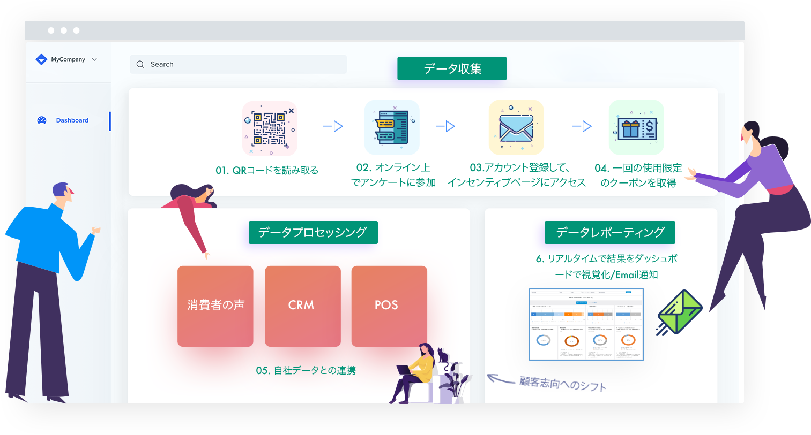

顧客経験を理解する重要性
「82%の消費者：最高の顧客経験をもたらす一番の要因は、いかに問題を迅速に解決できるか」
「86%の消費者：顧客経験が良い方のサービスにお金を払う」
「1％の消費者：業者は、顧客の期待を常に満たしている」
「1％の消費者：業者は、顧客の期待を常に満たしている」
「2020年までに、価格や商品よりも顧客経験がブランド価値の主要な指標となる」
ビジネスを成功に導く鍵

顧客の声をタイムリーに収集
結果を効率的に分析

結果を分析する
即時の対応につなげる

成功の鍵
顧客ロイヤリティの向上

Syno CX エンハンスメント
プラットフォームとは？
- Syno CXエンハンスメント・プラットフォームは、顧客ロイヤリティの向上を目的としたNPSや顧客満足度のデータ収集からレポーティングまでを一元化するプラットフォームです。
- 簡易アンケートツールにはない、オーダーメイドのCX管理システムと早期の可視化を実現
- 御社独自のニーズに応じて機能やサービスを追加・カスタマイズでき、変化への対応を前提とした拡張性と柔軟性が特徴
Syno CX エンハンスメント
プラットフォームとは？
- Syno CXエンハンスメント・プラットフォームは、顧客ロイヤリティの向上を目的としたNPSや顧客満足度のデータ収集からレポーティングまでを一元化するプラットフォームです。
- 簡易アンケートツールにはない、オーダーメイドのCX管理システムと早期の可視化を実現
- 御社独自のニーズに応じて機能やサービスを追加・カスタマイズでき、変化への対応を前提とした拡張性と柔軟性が特徴
Syno CX エンハンスメント
プラットフォームとは？
- Syno CXエンハンスメント・プラットフォームは、顧客ロイヤリティの向上を目的としたNPSや顧客満足度のデータ収集からレポーティングまでを一元化するプラットフォームです。
- 簡易アンケートツールにはない、オーダーメイドのCX管理システムと早期の可視化を実現
- 御社独自のニーズに応じて機能やサービスを追加・カスタマイズでき、変化への対応を前提とした拡張性と柔軟性が特徴
Syno CX エンハンスメントプラットフォームの仕組み
顧客ロイヤリティ戦略の策定からデータ共有までを一元化する独自のCXエンハンスメント・プラットフォームをお客様と共に構築します。CX分野の経験豊富な専門家と最先端のテクノロジーを融合し、顧客の声を最適化します。カスタマイズ性が高いダッシュボードやリアルタイムの通知機能により、顧客の「今」をタイムリーに理解することができます。

01. 定義する
ロワティKPI
ロワティKPI

02. 顧客旅

03. 顧客フィ
ードバック
ードバック

04. フィードバ
ック分析
ック分析

05. 結果の共有

06. 行動
Synoが選ばれれる理由
Syno CX
専門家
専門家
1. SynoのCX専門家が、御社の顧客価値の最大化を実現する仕組み作りをトータルサポート
2. ロイヤリティ指標の設定やカスタマージャーニーマップの作成
2. ロイヤリティ指標の設定やカスタマージャーニーマップの作成
顧客フィード
バック
バック
1. QRコードやEmail等、ニーズに合った方法で消費者の声を効率的に収集
2. お客様独自の回答インセンティブを設定し、回答率を最大化
2. お客様独自の回答インセンティブを設定し、回答率を最大化
フィードバッ
ク分析
ク分析
1. 自社・第三者データをプラットフォームに連携し、顧客の360°のインサイトを獲得
2. 定量データや自由回答等を効率的に分析するためのダッシュボードを一からカスタマイズ構築
2. 定量データや自由回答等を効率的に分析するためのダッシュボードを一からカスタマイズ構築
結果の共有
1. Emailによる通知や様々なデータフォーマットへのエクスポート機能により、結果の共有をカスタマイズ
2. 個別の回答結果を簡単にトラッキングし、タイムリーに通知
2. 個別の回答結果を簡単にトラッキングし、タイムリーに通知
CXエンハンスメント事例紹介
CX エンハンスメント・プラットフォーム
簡易アンケートシステムでは対応が難しい、カスタマイズ性及び拡張性を備え、複数のデータソースと連携したCXエンハンスメント・プラットフォームを受託開発しています。これにより、顧客経験のより包括的な理解と顧客ロイヤリティ向上の最大化が実現します。

国内に約1300店舗で展開するコーヒーチェーンは、より効率的に顧客及び従業員の声を把握し、共有する仕組みを探していた。以前自社でアンケートは実施していたが回答率が低く、データ共有にタイムリーさが欠けていたので、迅速なアクションに繋げることができていなかった。

QRコードによるアンケートを主体とした仕組みを構築。
データ共有にはダッシュボードをカスタマイズし、データの視覚化と自由回答の分析を提供。データ閲覧権限が異なるIDを作成し、必要なデータを共有できる環境を構築した。
データ共有にはダッシュボードをカスタマイズし、データの視覚化と自由回答の分析を提供。データ閲覧権限が異なるIDを作成し、必要なデータを共有できる環境を構築した。
QRコードとインセンティブの付与によって、高い回答率で効率的に回答を回収し、部署間のタイムリーなデータ共有を実現。結果、ロイヤリティ向上や従業員が抱える問題に対する迅速な対応につながった。
Syno CX Enhancementは、年間100,000円からご利用頂けます。
Synoとは
北欧に起源を持ち北鎌倉の古民家を拠点に、グローバルの消費者の声を一元的に収集、加工、分析・レポーティングするグローバルインサイト・プラットフォームを開発しています。

市場調査、ITコンサルティング、顧客ロイヤリティ戦略等、様々なデータ関連の経験及びノウハウを持つデータ専門家集団

DIY独自開発のITソリューションと外部テクノロジーを組み合わせた包括的かつ柔軟なプラットフォームを提供

お客様中心の設計で、御社独自の運用が可能となるインフラを開発。導入コストが低く、ニーズに応じてアドオンで機能やサービスを追加・カスタマイズできる高い拡張性
サービスに関する質問やお見積りは、ご遠慮なくご連絡下さい。
Syno CX Enhancementは、年間100,000円からご利用頂けます。